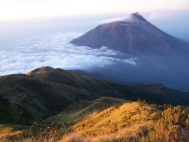

8. Gunung Lawu

Gunung Lawu terletak di Karanganya, Jawa Tengah. Tepatnya terletak di perbatasan Jawa Tengah dan Jawa Timur, tepatnya Kabupaten Karanganyar dan Kabupaten Magelang bagian timur. Gunung ini menjulang sekitar 3.265 meter di atas permukaan laut.
Gunung Lawu merupakan gunung yang tidak aktif. Letusan terakhir Gunung Lawu dimulai pada tahun 1885. Meski demikian, gunung ini masih memiliki lereng terjal yang mengeluarkan belerang. Kawasan pegunungan Lawu juga merupakan kawasan tropis yang banyak terdapat aliran sungai. Kawasan ini merupakan salah satu tempat wisata di Karanganyar.
Gunung Lawu mempunyai beberapa puncak, Hargo Dalem, Hargo Dumiling dan Hargo Dumilah. Untuk pendakian disediakan tiga titik start yaitu Cemoro Kandang, Cemoro Sewu dan Jalur Candi Cetho. Jika ingin berwisata menikmati udara segar dan tempat yang nyaman, Anda bisa naik jalur Cemoro Sewu dan Cemoro Kandang. Kemudian Anda bisa berjalan-jalan ke kebun stroberi, Telaga Sarangan dan lokasi terpencil di sekitar Tawangmangu.
E-book ini secara tidak langsung merupakan portal menuju dimensi lain jauh di jantung Gunung Lawu, salah satu kawasan paling misterius di Pulau Jawa. Pasalnya, pada tahun 1995, NASA menangkap cahaya putih yang datang entah dari mana di luar angkasa, memancar terang dari area tersebut. Dan kini portal tersebut telah dibuka, portal yang disebut-sebut mengungkap kebohongan tentang sejarah nusantara. Dalam e-book tersebut dijelaskan bahwa terdapat dua buah candi di lereng Lawu, membuktikan bahwa nusantara ini pernah menjadi negara maju. Hal ini terlihat dari bentuk candi Maya yang mirip piramida di Amerika Tengah, yang usianya lebih tua dibandingkan candi-candi lain di Jawa.